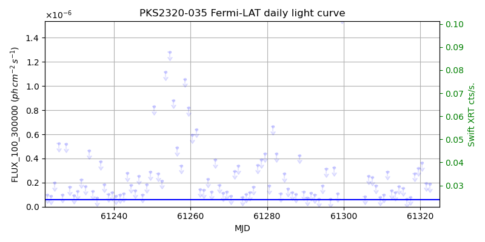
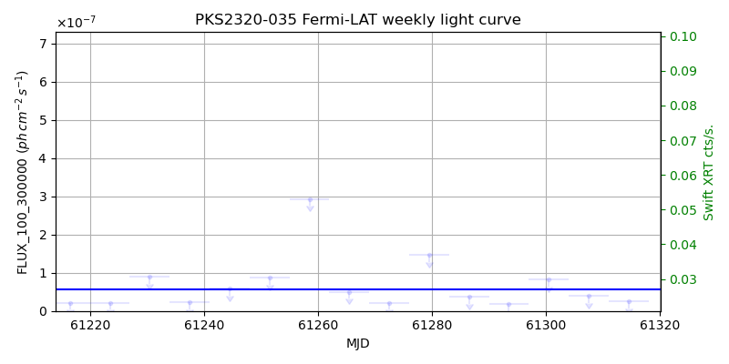
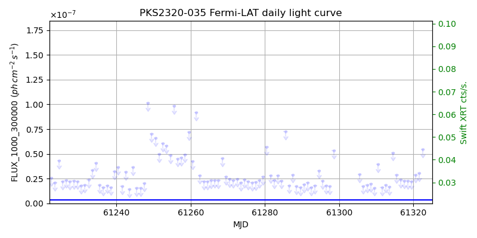
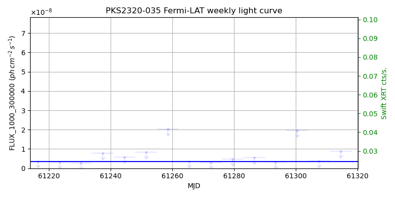

LAT Lightcurve site: https://fermi.gsfc.nasa.gov/ssc/data/access/lat/msl_lc/source/PKS_2320-035
Swift site: https://www.swift.psu.edu/monitoring/source.php?source=PKS2320-035
NED: Query
Time of last update of this page: UT: 2026-10-10 15:32 (MJD: 61323.647)
| Property | Value |
|---|---|
| R.A. | 23:23:31.92 |
| Dec. | -3:17:06.0 |
| z | 1.411 |
| 3FGL SpectrumType | LogParabola |
| 3FGL PL Index | |
| 3FGL Flux_100_300000 | 5.67e-08 1 / (s cm2) |
| 3FGL Flux_1000_300000 | 3.56e-09 1 / (s cm2) |
| 3FGL Flux >200 GeV | 9.86e-13 1 / (s cm2) |
| 3FGL Extrap. Crab >200 GeV | 0.00 |
| 3FGL Flux After EBL Absorption >200GeV | 3.26e-15 1 / (s cm2) |
| 3FGL EBL Crab Fraction >200GeV | 0.00 |

| MJD | dMJD | Flux | dFlux | Frac3FGL | FracCrab>200GeV | EBLFracCrab>200GeV |
|---|---|---|---|---|---|---|
| 61318.50 | 0.50 | 2.77e-07 | 0.00e+00 | 0.00 | 0.00 | 0.00 |
| 61319.50 | 0.50 | 3.22e-07 | 0.00e+00 | 0.00 | 0.00 | 0.00 |
| 61320.50 | 0.50 | 3.64e-07 | 0.00e+00 | 0.00 | 0.00 | 0.00 |
| 61321.50 | 0.50 | 1.96e-07 | 0.00e+00 | 0.00 | 0.00 | 0.00 |
| 61322.50 | 0.50 | 1.89e-07 | 0.00e+00 | 0.00 | 0.00 | 0.00 |

| MJD | dMJD | Flux | dFlux | Frac3FGL | FracCrab>200GeV | EBLFracCrab>200GeV |
|---|---|---|---|---|---|---|
| 61286.50 | 3.50 | 3.71e-08 | 0.00e+00 | 0.00 | 0.00 | 0.00 |
| 61293.50 | 3.50 | 1.81e-08 | 0.00e+00 | 0.00 | 0.00 | 0.00 |
| 61300.50 | 3.50 | 8.20e-08 | 0.00e+00 | 0.00 | 0.00 | 0.00 |
| 61307.50 | 3.50 | 3.92e-08 | 0.00e+00 | 0.00 | 0.00 | 0.00 |
| 61314.50 | 3.50 | 2.55e-08 | 0.00e+00 | 0.00 | 0.00 | 0.00 |

| MJD | dMJD | Flux | dFlux | Frac3FGL | FracCrab>200GeV | EBLFracCrab>200GeV |
|---|---|---|---|---|---|---|
| 61318.50 | 0.50 | 2.25e-08 | 0.00e+00 | 0.00 | 0.00 | 0.00 |
| 61319.50 | 0.50 | 2.24e-08 | 0.00e+00 | 0.00 | 0.00 | 0.00 |
| 61320.50 | 0.50 | 2.89e-08 | 0.00e+00 | 0.00 | 0.00 | 0.00 |
| 61321.50 | 0.50 | 3.06e-08 | 0.00e+00 | 0.00 | 0.00 | 0.00 |
| 61322.50 | 0.50 | 5.44e-08 | 0.00e+00 | 0.00 | 0.00 | 0.00 |

| MJD | dMJD | Flux | dFlux | Frac3FGL | FracCrab>200GeV | EBLFracCrab>200GeV |
|---|---|---|---|---|---|---|
| 61286.50 | 3.50 | 5.44e-09 | 0.00e+00 | 0.00 | 0.00 | 0.00 |
| 61293.50 | 3.50 | 3.20e-09 | 0.00e+00 | 0.00 | 0.00 | 0.00 |
| 61300.50 | 3.50 | 1.95e-08 | 0.00e+00 | 0.00 | 0.00 | 0.00 |
| 61307.50 | 3.50 | 3.78e-09 | 0.00e+00 | 0.00 | 0.00 | 0.00 |
| 61314.50 | 3.50 | 8.86e-09 | 0.00e+00 | 0.00 | 0.00 | 0.00 |
--------------------------------------------------------- Using user-supplied coords: 23:23:31.92 -3:17:06.0 2000 --------------------------------------------------------- FLWO UT night of: 2026-10-11 Local Sid. @ Midnight: 00:55 Sunset (-15.0) (local, UT): 19:04 02:04 Sunrise (-15.0) (local, UT): 05:18 12:18 Moonrise (local, UT): Moonset (local, UT): Moon phase: 0.01 --------------------------------------------------------- AzTime LSID UT Obj_el Obj_az Mn_el Mn_az Sep. --------------------------------------------------------- 19:04 19:58 02:04 30.1 115.5 -16.1 264.2 148.1 19:34 20:29 02:34 35.7 121.4 -22.3 267.8 147.9 20:04 20:59 03:04 40.9 128.3 -28.5 271.5 147.6 20:34 21:29 03:34 45.7 136.3 -34.7 275.4 147.3 21:04 21:59 04:04 49.7 145.7 -40.8 279.7 147.0 21:34 22:29 04:34 52.8 156.7 -46.8 284.6 146.6 22:04 22:59 05:04 54.7 169.0 -52.7 290.5 146.3 22:34 23:29 05:34 55.2 182.0 -58.4 297.7 146.0 23:04 23:59 06:04 54.2 194.9 -63.6 307.3 145.6 23:34 00:29 06:34 51.9 206.9 -68.1 320.3 145.3 00:04 00:59 07:04 48.5 217.3 -71.3 338.2 144.9 00:34 01:29 07:34 44.3 226.3 -72.6 0.4 144.6 01:04 01:59 08:04 39.4 233.9 -71.5 22.7 144.2 01:34 02:30 08:34 34.0 240.5 -68.3 40.8 143.9 02:04 03:00 09:04 28.3 246.1 -63.9 54.1 143.5 02:34 03:30 09:34 22.3 251.2 -58.7 63.8 143.2 03:04 04:00 10:04 16.2 255.8 -53.1 71.2 142.8 03:34 04:30 10:34 10.0 260.1 -47.3 77.2 142.5 04:04 05:00 11:04 3.7 264.1 -41.4 82.2 142.1 04:34 05:30 11:34 -1.7 268.1 -35.3 86.6 141.8 05:04 06:00 12:04 -9.2 272.0 -29.2 90.6 141.5 05:18 06:14 12:18 -12.1 273.8 -26.5 92.4 141.4 --------------------------------------------------------- Dark hours >55 deg.: 0.52 srcstart (UT): 2026-10-11 05:13 srcend (UT): 2026-10-11 05:45